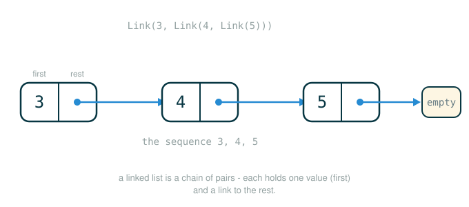

2.3 Linked Lists and Recursive Sequence Construction
Up to now, every sequence you have built has been a native Python value: a list, a range, a string. This lesson builds a sequence out of nothing but pairs that you wire together yourself. That structure is the linked list, and it is your first chance to see a data type whose very shape is recursive.
By the end you will be able to do five things. You will read a linked list as a chain of two-part links instead of one flat container. You will build one with the link constructor and take it apart with the first and rest selectors. You will write iterative functions that walk the chain one link at a time. You will write recursive functions that match the recursive shape of the data almost line for line. And you will use linked lists to construct answers incrementally, building up to a program that lists every integer partition explicitly rather than merely counting them.
The single habit this lesson trains is this: when a piece of data is defined in terms of a smaller copy of itself, the cleanest code is usually defined the same way.
A Chain of Notes
Picture a scavenger hunt. The organizer hands you one card. On that card are two things: a clue you can use right now, and directions to where the next card is hidden. You read the clue, walk to the next spot, and find another card with the same two-part shape: one clue, plus directions onward. Eventually you reach a card that says "you are done" and points nowhere.
A linked list has exactly that shape. Each link holds two things:
- the first value of the sequence, the part you can use right now
- the rest of the sequence, which is itself another linked list
That second part is the recursive idea. The rest of a linked list is not a number or a loose value. It is a smaller linked list, holding its own first value and its own rest, all the way down until you reach a final marker that means "the sequence ends here." That marker plays the role of the last card in the hunt.
The figure below shows this chain of links, each holding a first value and a rest that points to the next link.

For the sequence 1, 2, 3, 4, the chain looks like this:
+---+---+ +---+---+ +---+---+ +---+-------+
| 1 | o----> | 2 | o----> | 3 | o----> | 4 | empty |
+---+---+ +---+---+ +---+---+ +---+-------+Each box is one link. The left cell holds a value; the right cell holds an arrow to the next link. The very last link's "rest" is the special end-marker rather than another arrow.
Building the Link Abstraction in Python
A linked list is built from pairs, and we represent each pair as a two-element Python list. But you are not going to reach into those lists with [0] and [1] in your everyday code. Instead you will define a small abstract data representation: a constructor that builds a link, selectors that read its two parts, and a checker that decides whether a value obeys the rules. Once those exist, you program against the names, not the underlying lists.
First, the end-marker. We need a single value that stands for "the empty linked list," the thing the last link points at:
# (1)
empty = 'empty'
The exact value is not important; what matters is that it is one fixed value every part of the program agrees to treat as "the end." Here we use the string 'empty'.
Now the checker, constructor, and selectors. This is the official representation, reproduced exactly:
# (2)
def is_link(s):
"""s is a linked list if it is empty or a (first, rest) pair."""
return s == empty or (len(s) == 2 and is_link(s[1]))
def link(first, rest):
"""Construct a linked list from its first element and the rest."""
assert is_link(rest), "rest must be a linked list."
return [first, rest]
def first(s):
"""Return the first element of a linked list s."""
assert is_link(s), "first only applies to linked lists."
assert s != empty, "empty linked list has no first element."
return s[0]
def rest(s):
"""Return the rest of the elements of a linked list s."""
assert is_link(s), "rest only applies to linked lists."
assert s != empty, "empty linked list has no rest."
return s[1]
Read these as a set of cooperating pieces:
linkis the constructor. It takes a first value and a rest, checks that the rest really is a linked list, and packages them as the pair[first, rest].firstis a selector. It returns the value stored in a link.restis a selector. It returns the smaller linked list stored in a link.is_linkis the checker. It returnsTruewhen a value is either the end-marker or a two-element pair whose second part is, recursively, also a linked list.
Notice that is_link and link are themselves recursive: is_link validates the rest by calling is_link again, and link only accepts a rest that already passes that check. This is the same closure idea from earlier in the chapter: the rest of a linked list must be the same kind of thing as the whole linked list, which is what lets the chain extend to any length.
The constructor and selectors are designed to be inverses. If you build a link from a first value and a rest, then first hands back exactly that first value and rest hands back exactly that rest. That inverse relationship is the entire contract of the abstraction. (One aside worth holding onto: because a link is just a pair, and pairs can be built out of functions alone, linked lists could be implemented with no lists at all. The two-element list is a convenience, not a requirement. Don't worry about how building pairs from functions would work; a later section shows it. The point here is only that the abstraction doesn't depend on the two-element list.)
Anatomy of the Constructor Call
Here is the smallest non-empty linked list, a single link holding the value 1:
# (3)
link(1, empty)
Follow the call one part at a time. Each row says what that part does, and the final row gives the value the whole call produces:
link(1, empty)
├─ link ........ the constructor: packages a first value and a rest into one link
├─ ( ........... begins the arguments
├─ 1 ........... the first value to store in this link
├─ , ........... separates the arguments
├─ empty ....... the rest: the end-marker, so this link is the last one
├─ ) ........... ends the arguments and performs the call
└─ evaluates to [1, 'empty'], a one-element linked listIn the chain picture, that result is a single box whose rest is the end-marker:
+---+-------+
| 1 | empty |
+---+-------+Building a Longer List From the Inside Out
To build the four-element sequence 1, 2, 3, 4, you nest four constructor calls. Each link wraps the chain that the next call produced:
# (4)
four = link(1, link(2, link(3, link(4, empty))))
Follow how this expression is built. Each row names the sub-call and what it contributes; the final row is the whole value:
link(1, link(2, link(3, link(4, empty))))
├─ link(4, empty) ................. the last link: holds 4, rest is the end-marker
├─ link(3, <that>) ................ holds 3, rest is the 4-link
├─ link(2, <that>) ................ holds 2, rest is the 3-link
├─ link(1, <that>) ................ holds 1, rest is the 2-link
└─ evaluates to the full chain 1 -> 2 -> 3 -> 4 -> emptyPython always evaluates the innermost call first, because an outer link cannot run until it knows what its rest argument is. So the chain is actually constructed back to front: the 4-link exists before the 3-link, which exists before the 2-link, and so on. In evaluation order:
link(4, empty)
link(3, link(4, empty))
link(2, link(3, link(4, empty)))
link(1, link(2, link(3, link(4, empty))))There are two ways to look at the finished value. The literal representation, the actual nested Python lists, is deeply nested:
[1, [2, [3, [4, 'empty']]]]The abstract view, the thing you actually care about, is a flat sequence:
1 -> 2 -> 3 -> 4 -> emptyThe whole point of the abstraction is that you get to think in the second picture and let link, first, and rest manage the first.
Reading Values Out With the Selectors
Once four exists, you pull values out with the selectors. Here is the official session that does exactly that:
>>> four = link(1, link(2, link(3, link(4, empty))))
>>> first(four)
1
>>> rest(four)
[2, [3, [4, 'empty']]]first(four) returns the value in the outermost link, 1. rest(four) returns everything after it, which is itself a linked list, the chain 2 -> 3 -> 4. Python displays that rest in its literal nested form, [2, [3, [4, 'empty']]], but abstractly it is just the three-element sequence.
To reach the second value, you compose the selectors. Read the composition from the inside out:
first(rest(four))
├─ rest(four) ........ strip the first link, leaving the sequence 2 -> 3 -> 4
├─ first(...) ........ take the first value of that shorter sequence
└─ evaluates to 2This inside-out reading, evaluate the inner call, then apply the outer one, is exactly how every nested expression works. Linked lists make it concrete: each rest peels off one link, and first reads whatever link is now at the front.
Length and Selection: Showing It Is a Sequence
A linked list stores values in order, but storing values is not enough to call it a sequence. A sequence has to support two behaviors: you can ask for its length, and you can select an element by index. We build both on top of the abstraction.
Length by Iteration
This function counts the links by walking down the chain until it reaches the end-marker:
# (5)
def len_link(s):
"""Return the length of linked list s."""
length = 0
while s != empty:
s, length = rest(s), length + 1
return length
The loop does two things on every pass: it advances s to the rest of the current list, and it adds one to length. When s finally reaches empty, the loop stops and the count is returned. Trace len_link(four):
Start:
s = 1 -> 2 -> 3 -> 4 -> empty
length = 0
Pass 1:
s becomes 2 -> 3 -> 4 -> empty
length becomes 1
Pass 2:
s becomes 3 -> 4 -> empty
length becomes 2
Pass 3:
s becomes 4 -> empty
length becomes 3
Pass 4:
s becomes empty
length becomes 4
Loop test is now false; return 4.One subtlety lives in the line s, length = rest(s), length + 1. Python evaluates both expressions on the right, rest(s) and length + 1, before it rebinds either name on the left. So rest(s) uses the old s, and length + 1 uses the old length. If you split this into two separate assignments in the wrong order, you would advance s first and then count the wrong list. The simultaneous assignment keeps the two updates consistent.
Selection by Iteration
To select the element at index i, move down the chain i times, then read the first value of wherever you land:
# (6)
def getitem_link(s, i):
"""Return the element at index i of linked list s."""
while i > 0:
s, i = rest(s), i - 1
return first(s)
Each pass advances s to its rest and decreases i by one. When i reaches 0, the front link is the one you wanted, and first(s) returns its value. The official session confirms both functions on four:
>>> len_link(four)
4
>>> getitem_link(four, 1)
2A Step-by-Step Trace of getitem_link
Selection by index is where the "increasingly shorter suffix" pattern is easiest to watch, so it is worth tracing getitem_link(four, 1) frame by frame. To make the frames readable, treat four as the literal nested pairs [1, [2, [3, [4, 'empty']]]]; reaching past the abstraction like this is something you would not do in real code, but it lets you see the values directly.
Call getitem_link(s, i) with s = [1, [2, [3, [4, 'empty']]]], i = 1.
Local frame:
s -> [1, [2, [3, [4, 'empty']]]]
i -> 1
Check the while header: i > 0 is True, so run the suite.
rest(s) returns the sublist that starts with 2.
Rebind both names simultaneously.
Local frame is now:
s -> [2, [3, [4, 'empty']]]
i -> 0
Check the while header again: i > 0 is False, so leave the loop.
Run the final line: first(s).
first selects the value 2 from the front link.
Return 2 from getitem_link.Each pass of the loop hands the next pass a strictly shorter list, the suffix that remains. That is the shape of nearly every linked-list computation: peel off the front, recurse or loop on the rest, until either the end-marker or the target is reached.
This incremental walking does cost real time. To find the length, you visit every link; to find an element, you visit every link up to that index. Python's built-in lists are stored differently under the hood, so they can report their length and fetch an element without walking, but the details of that representation are beyond what we need here. What matters is that the linked list satisfies the sequence behaviors, even if it pays a walking cost to do so.
The Same Operations, Written Recursively
Both len_link and getitem_link are iterative: a loop peels away one layer of the pair at a time. But the data is recursive, so the operations can be too. A recursive version says what to do at the end of the list, and otherwise reduces the problem to the same operation on the rest.
A Bridge: Recursive Length You Can Check by Hand
Before the official version, here is a slightly more explicit form you can verify on a two-element list. It spells out the recursive case with an else:
# (7)
def len_link_recursive_bridge(s):
if s == empty:
return 0
else:
return 1 + len_link_recursive_bridge(rest(s))
Walk it on the sequence 1 -> 2 -> empty:
len_link_recursive_bridge(1 -> 2 -> empty)
= 1 + len_link_recursive_bridge(2 -> empty)
= 1 + (1 + len_link_recursive_bridge(empty))
= 1 + (1 + 0)
= 2Each call strips one link and adds one, and the deepest call hits the empty list and returns 0. The additions then resolve outward.
The Official Recursive Length
The official version is identical in behavior but drops the else. Because the if branch returns, control only reaches the last line when s is not empty, so the explicit else is unnecessary:
# (8)
def len_link_recursive(s):
"""Return the length of a linked list s."""
if s == empty:
return 0
return 1 + len_link_recursive(rest(s))
The base case is the empty list, whose length is 0. The recursive case takes the length of the rest and adds one for the current link.
The Official Recursive Selection
Index selection follows the same shape. The base case is reaching index 0; otherwise, look for index i - 1 in the rest:
# (9)
def getitem_link_recursive(s, i):
"""Return the element at index i of linked list s."""
if i == 0:
return first(s)
return getitem_link_recursive(rest(s), i - 1)
When i is 0, the value you want is at the front, so return first(s). Otherwise, the answer is the element at index i - 1 of the rest of the list, which is a smaller version of the very same problem. Both recursive functions follow the chain of pairs until they hit either the end of the list or the target element. The official session shows them producing the same answers as their iterative twins:
>>> len_link_recursive(four)
4
>>> getitem_link_recursive(four, 1)
2Recursion for Transforming and Combining Lists
Recursion is not just for measuring a list; it is also how you build new lists from old ones. Three operations come up constantly: appending one list to another, transforming every element, and keeping only some elements.
Appending: extend_link
To put the elements of one list s in front of another list t, copy s link by link and attach t at the end:
# (10)
def extend_link(s, t):
"""Return a list with the elements of s followed by those of t."""
assert is_link(s) and is_link(t)
if s == empty:
return t
else:
return link(first(s), extend_link(rest(s), t))
The base case is when s is empty: there is nothing of s left to copy, so the result is just t. The recursive case rebuilds the front link of s onto the extension of the rest of s with t. The official session shows the list four appended to itself:
>>> extend_link(four, four)
[1, [2, [3, [4, [1, [2, [3, [4, 'empty']]]]]]]]Abstractly, that nested result is the eight-element sequence:
1 -> 2 -> 3 -> 4 -> 1 -> 2 -> 3 -> 4 -> emptyThe first four is copied into fresh links, and where its end-marker used to be, the second four now hangs.
Transforming: apply_to_all_link
This function builds a new list of the same shape, but with a function applied to every element:
# (11)
def apply_to_all_link(f, s):
"""Apply f to each element of s."""
assert is_link(s)
if s == empty:
return s
else:
return link(f(first(s)), apply_to_all_link(f, rest(s)))
If s is empty, the transformed list is also empty. Otherwise, apply f to the first value, and put that in front of the transformed rest. The official session squares every element of four:
>>> apply_to_all_link(lambda x: x*x, four)
[1, [4, [9, [16, 'empty']]]]The chain still has four links in the same order, but each value has been replaced by its square: 1 -> 4 -> 9 -> 16 -> empty. The structure is preserved; only the contents change.
Filtering: keep_if_link
This function keeps only the elements that satisfy a predicate f:
# (12)
def keep_if_link(f, s):
"""Return a list with elements of s for which f(e) is true."""
assert is_link(s)
if s == empty:
return s
else:
kept = keep_if_link(f, rest(s))
if f(first(s)):
return link(first(s), kept)
else:
return kept
Read the order of operations carefully. The function first filters the rest of the list into kept. Only then does it look at the current first value: if f(first(s)) is true, it puts that value back onto the front of kept; if not, it returns kept unchanged, dropping the current value. The official session keeps the even elements of four:
>>> keep_if_link(lambda x: x%2 == 0, four)
[2, [4, 'empty']]The odds 1 and 3 are dropped; the evens 2 and 4 remain in order, as 2 -> 4 -> empty.
Joining for Display: join_link
To turn a linked list into a readable string, walk it and place a separator between consecutive elements:
# (13)
def join_link(s, separator):
"""Return a string of all elements in s separated by separator."""
if s == empty:
return ""
elif rest(s) == empty:
return str(first(s))
else:
return str(first(s)) + separator + join_link(rest(s), separator)
There are three cases, and the middle one is the interesting one. If the list is empty, the result is the empty string. If the current link is the last one (its rest is empty), return just that value as a string, with no trailing separator. Otherwise, glue the current value, the separator, and the joined rest together. The official session joins four with a comma:
>>> join_link(four, ", ")
'1, 2, 3, 4'Without the elif rest(s) == empty case, the function would tack a separator after the final element and produce '1, 2, 3, 4, '. That middle case is what stops the trailing separator.
Recursive Construction: Listing the Partitions of an Integer
Linked lists shine when you build a sequence up incrementally inside a recursive computation, especially when you do not know in advance how long the result will be. The classic example is integer partitions.
A partition of a positive integer n using parts up to m is a way to write n as a sum of positive integers, each no larger than m. Earlier in the course, a tree-recursive function merely counted these partitions. Now we can list them explicitly. For n = 4 with parts up to 3, the partitions are:
3 + 1
2 + 2
2 + 1 + 1
1 + 1 + 1 + 1We represent each individual partition as a linked list of its parts, and then represent the whole collection of partitions as a linked list of those linked lists. The recursive analysis is the same one used for counting: partitioning n with parts up to m either uses at least one part of size m, or it uses no part of size m at all.
# (14)
def partitions(n, m):
"""Return a linked list of partitions of n using parts of up to m.
Each partition is represented as a linked list.
"""
if n == 0:
return link(empty, empty) # A list containing the empty partition
elif n < 0 or m == 0:
return empty
else:
using_m = partitions(n-m, m)
with_m = apply_to_all_link(lambda s: link(m, s), using_m)
without_m = partitions(n, m-1)
return extend_link(with_m, without_m)
The base cases capture when the recursion succeeds or fails:
- If
n == 0, you have used parts that sum exactly to the original target, so you have found one valid partition: the empty one. The return valuelink(empty, empty)is a collection holding exactly one partition, and that one partition is itself the empty linked list. - If
n < 0, the most recent part overshot the target, so this path is a dead end and contributes no partitions, henceempty. - If
m == 0, there are no positive part sizes left to use, so again no partitions, henceempty.
The recursive case builds two sub-collections and combines them:
using_mfinds every partition of the smaller targetn - m(still allowing parts up tom). Each of those partitions becomes a partition ofnonce you prepend a singlem, which is whatwith_mdoes by mappinglambda s: link(m, s)over the whole collection.without_mfinds every partition ofnthat uses parts no larger thanm - 1, that is, every partition that avoidsmentirely.extend_linkconcatenates the two collections into one linked list of all partitions.
The subtle point is the n == 0 base case. Returning link(empty, empty) says "there is one success here, and it is the empty partition," whereas returning empty would say "there are no successes here." Those are very different: one contributes a partition to the count, the other contributes nothing.
Displaying the Partitions
Because partitions returns a linked list of linked lists, displaying it takes two passes of join_link with different separators: one to render each partition with " + " between its parts, and one to put each rendered partition on its own line:
# (15)
def print_partitions(n, m):
lists = partitions(n, m)
strings = apply_to_all_link(lambda s: join_link(s, " + "), lists)
print(join_link(strings, "\n"))
The official session prints the partitions of 6 using parts up to 4:
>>> print_partitions(6, 4)
4 + 2
4 + 1 + 1
3 + 3
3 + 2 + 1
3 + 1 + 1 + 1
2 + 2 + 2
2 + 2 + 1 + 1
2 + 1 + 1 + 1 + 1
1 + 1 + 1 + 1 + 1 + 1The order is not arbitrary. The recursion considers partitions that use the largest available part before those that avoid it, because with_m (the partitions containing m) is extended in front of without_m. That is why every partition containing a 4 is listed before any partition that tops out at 3, and so on down. This is the same recursive idea you saw as a decision tree when you were only counting partitions; here the successful paths are collected into an explicit linked list of answers rather than tallied as a number.
⚠Common Beginner Traps
The first trap is treating empty as if it were Python's empty list []. In this representation, empty is the string 'empty', a sentinel that means "end of the chain." Comparisons like s == empty work only because every part of the program agrees on that one fixed marker. It is not [], and mixing the two will break the checker.
The second trap is forgetting that the rest of a link must itself be a linked list. The following is rejected by the constructor:
# (16)
link(1, 2)
The assert is_link(rest) in link fires, because 2 is a bare number, not a linked list. The rest position is what carries the chain forward, so it must always be another link or the end-marker.
The third trap is reaching past the abstraction with raw indexing in ordinary code:
# (17)
s[0]
s[1]
Those work because a link happens to be a two-element list, but they expose the representation. In linked-list programs, use first(s) and rest(s) instead. The only place that touches s[0] and s[1] directly should be the selectors themselves, the code that implements the abstraction.
The fourth trap is omitting the empty base case in a recursive function. Without a check for s == empty, the recursion eventually calls first or rest on the end-marker. Those selectors assert s != empty, so the program stops with an assertion error instead of silently misbehaving, but the fix is always the same: handle empty first.
✓Check Your Understanding
- What are the two parts of a non-empty linked list, and what kind of value must the second part be?
- Why does the constructor reject
link(1, 2)? - When
fourrepresents1 -> 2 -> 3 -> 4, what doesfirst(rest(four))return, and why? - When
fourrepresents1 -> 2 -> 3 -> 4, what doesgetitem_link_recursive(four, 2)return, and how many calls togetitem_link_recursivehappen along the way? - In
partitions, why does then == 0case returnlink(empty, empty)rather thanempty?
Show the answers
- A non-empty linked list stores a first value and the rest of the list. The rest must itself be a linked list, that is, either another link or the end-marker
empty. That requirement is what lets the chain extend to any length. - The constructor runs
assert is_link(rest), and2is not a linked list, so the assertion fails. The rest position must preserve the chain shape, and a bare number cannot. - It returns
2.rest(four)strips the first link to give the sequence2 -> 3 -> 4, andfirstthen reads the value at the front of that shorter sequence, which is2. - It returns
3. The first call hasi = 2, so it recurses on the rest withi = 1; that call recurses again on the rest withi = 0; the third call hits the base case and returnsfirstof the link now at the front, which is3. That makes three calls in all, one per step down to index0. - Reaching
n == 0means a sequence of parts summed exactly to the target, so one partition has been found, the empty one.link(empty, empty)is a collection containing that single successful partition, whileemptywould mean no partitions were found at all.
§Summary
A linked list represents a sequence as a chain of two-part links: each link holds a first value and the rest of the sequence, where the rest is itself a linked list ending in the marker empty. You build links with the link constructor and read them with the first and rest selectors, programming against those names instead of the underlying pairs. Because the data is recursive, the operations come in two flavors: iterative functions like len_link and getitem_link walk the chain one link at a time, while recursive functions like len_link_recursive, extend_link, apply_to_all_link, keep_if_link, and join_link handle the empty case and then reduce to the same operation on the rest. That recursive style pays off most in construction: partitions builds an explicit linked list of every way to write an integer as a sum, and print_partitions renders it. The throughline is that recursive data invites recursive code, and the abstraction barrier keeps that code readable no matter how deeply the pairs nest.
▶Step-Through Checkpoint
This program builds a two-element linked list, reads its parts with the selectors, and then measures it recursively. In an environment diagram, two points at the outer [first, rest] pair whose second slot holds the next pair, and so on down to 'empty', so the chain shows up on the heap as boxes nested inside boxes; as len_link_recursive recurses, each new frame binds s to one link deeper into that same structure, and the diagram lets you see the call descend the chain and then add a 1 per frame on the way back out. Before you step through the block below, write down three predictions: how many len_link_recursive frames will open over the whole run, what s holds in each of those frames, and what value remaining_items is bound to, written as nested Python lists.
# (18)
empty = 'empty'
def is_link(s):
"""s is a linked list if it is empty or a (first, rest) pair."""
return s == empty or (len(s) == 2 and is_link(s[1]))
def link(first, rest):
"""Construct a linked list from its first element and the rest."""
assert is_link(rest), "rest must be a linked list."
return [first, rest]
def first(s):
"""Return the first element of a linked list s."""
assert is_link(s), "first only applies to linked lists."
assert s != empty, "empty linked list has no first element."
return s[0]
def rest(s):
"""Return the rest of the elements of a linked list s."""
assert is_link(s), "rest only applies to linked lists."
assert s != empty, "empty linked list has no rest."
return s[1]
def len_link_recursive(s):
"""Return the length of a linked list s."""
if s == empty:
return 0
return 1 + len_link_recursive(rest(s))
two = link(1, link(2, empty))
first_item = first(two)
remaining_items = rest(two)
second_item = first(remaining_items)
length = len_link_recursive(two)
Step through it one line at a time and check each prediction as the frames appear. The recursive length call opens three frames, one per link plus one for the end-marker: the first holds the full chain in s, the second the one-link rest, and the third receives empty and returns 0; the earlier frames each add 1 as they return, resolving as 1 + (1 + 0) to bind length to 2. The global frame ends with two bound to the chain 1 -> 2 -> empty, first_item to 1, remaining_items to [2, 'empty'], the sequence 2 -> empty in literal form, and second_item to 2.